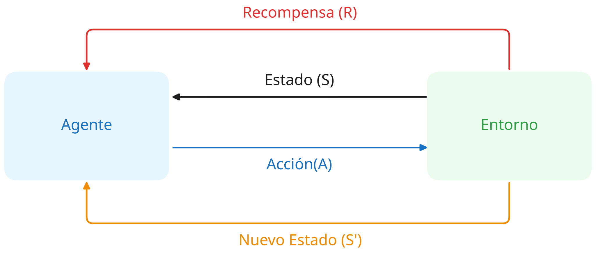

El Aprendizaje por Refuerzo (Reinforcement Learning, RL) es un tipo de proceso de aprendizaje automático en el que agentes autónomos aprenden a tomar decisiones interactuando con su entorno (IBM, 2024; Amazon Web Services, s. f.). Un agente autónomo es cualquier sistema capaz de decidir y actuar en respuesta a lo que percibe, sin depender de instrucciones directas. En este modelo el agente aprende a realizar su tarea por ensayo y error, sin que nadie le indique de antemano cuál es el comportamiento correcto.
Esta forma de aprender por ensayo y error es similar a cómo aprenden las personas: un niño, por ejemplo, con el tiempo aprende que si ayuda con las tareas en la casa sus padres estarán contentos con él, mientras que si se porta mal probablemente sus padres lo regañarán, y con el tiempo aprenderá qué comportamientos le conviene repetir. Un algoritmo de RL imita ese mismo proceso, probando distintas acciones y reteniendo las que producen mejores resultados.
Dentro del aprendizaje automático suelen distinguirse tres grandes paradigmas (Sutton & Barto, 2018). El aprendizaje supervisado necesita que una persona etiquete de antemano cada ejemplo con la respuesta correcta, y el modelo aprende a predecir esa respuesta para datos nuevos. El aprendizaje no supervisado recibe datos sin etiquetas y busca patrones ocultos en ellos. El Aprendizaje por Refuerzo no se parece a ninguno de los dos, no aprende a predecir ni a encontrar patrones, sino a actuar. No recibe ejemplos etiquetados de comportamiento correcto, sino que el propio agente genera experiencias que lo ayudarán a tomar decisiones a medida que interactúa con su entorno.
Este enfoque ofrece ventajas frente a otros métodos de aprendizaje automático. Suele desempeñarse mejor en entornos complejos y cambiantes, donde ni siquiera una persona con buen conocimiento del problema podría determinar fácilmente la mejor estrategia. Requiere menos intervención humana, ya que no depende de que alguien etiquete datos de entrenamiento. Y la recompensa acumulada en el tiempo, en lugar del resultado de una sola acción, es especialmente adecuada para problemas donde las consecuencias de una decisión no se conocen de inmediato, sino varios pasos después.
Pon a prueba lo que aprendiste
1. En Aprendizaje por Refuerzo, ¿quién le indica al agente cuál es la decisión correcta en cada situación?
2. ¿Qué tipo de problema resuelve mejor el RL en comparación con el aprendizaje supervisado?
Conceptos fundamentales de Aprendizaje por Refuerzo
Todo problema de RL se describe con las mismas seis piezas, sin importar el dominio en el que se aplique (Sutton & Barto, 2018). Conocerlas es clave para entender cómo funciona cualquier sistema de Aprendizaje por Refuerzo.
Agente
El agente es el algoritmo o sistema autónomo que toma las decisiones. Es quien interactúa con el entorno, elige qué acción ejecutar en cada momento y aprende de las consecuencias de esas acciones. Puede ser un programa de software, un robot, o cualquier sistema capaz de percibir su entorno y actuar sobre él.
Entorno
El entorno es todo lo externo al agente con lo que este interactúa. Define las reglas, los límites y las consecuencias posibles de cada acción. Es el espacio del problema en el que el agente se mueve: puede ser un juego, una simulación, o un sistema del mundo real.
Estado (S)
El estado es la representación del entorno en un instante determinado. Es la información que el agente percibe antes de decidir qué hacer. El conjunto de todos los estados posibles se conoce como espacio de estados.
Acción (A)
Una acción es cada uno de los pasos que el agente puede ejecutar para navegar por el entorno. El conjunto de todas las acciones posibles se conoce como espacio de acciones. En cada estado, el agente elige una acción y el entorno responde a ella.
Recompensa (R)
La recompensa es la señal numérica que el entorno entrega al agente después de cada acción, indicando qué tan buena o mala fue esa decisión. Puede ser positiva, negativa o cero. El único objetivo del agente es maximizar su recompensa acumulada a lo largo del tiempo, no solo la de una acción aislada.
Política (π)
La política es la estrategia aprendida por el agente: define su comportamiento mapeando los estados percibidos a las acciones que debe tomar en cada uno de ellos. Es el resultado final del proceso de aprendizaje. Una política bien entrenada permite al agente tomar la mejor decisión posible ante cualquier estado que encuentre.
Ciclo de interacción agente-entorno

El agente y el entorno se comunican continuamente: el agente recibe un estado,
elige una acción, y el entorno responde con una recompensa y el siguiente estado.
Estos seis elementos interactúan en un ciclo continuo: el agente observa un estado, elige una acción según su política, y el entorno responde con una recompensa y un nuevo estado. Este ciclo se repite muchas veces, permitiendo que el agente mejore su política con cada experiencia.
Pon a prueba lo que aprendiste
1. Un sensor reporta que la temperatura es 35°C en este instante. ¿Qué elemento del RL representa mejor esa lectura?
2. ¿Qué elemento define la estrategia final que el agente usa para decidir qué hacer ante cada estado?
El proceso de aprendizaje mediante recompensas
A diferencia del aprendizaje supervisado, donde alguien le dice al modelo cuál es la respuesta correcta, en RL el agente nunca recibe esa respuesta directamente. Solo recibe una señal numérica —la recompensa— que le indica qué tan buena o mala fue su última decisión (Sutton & Barto, 2018). A partir de esa señal, el agente ajusta su comportamiento para intentar hacerlo mejor en el futuro.
Exploración vs. explotación
Uno de los desafíos centrales del aprendizaje por refuerzo es decidir cuándo probar algo nuevo y cuándo repetir lo que ya se sabe que funciona (Sutton & Barto, 2018). A esto se le llama el equilibrio entre exploración y explotación.
Si el agente solo explota lo que ya conoce, repite siempre las mismas acciones y nunca descubre si existe una mejor opción. Si solo explora, prueba cosas nuevas constantemente pero nunca aprovecha lo que ya aprendió. Un agente bien diseñado necesita hacer ambas cosas: seguir explorando estados y acciones nuevos, y al mismo tiempo preferir las acciones que en el pasado le han dado mayores recompensas.
Pruébalo tú mismo: mueve el control y simula decisiones del agente
Explorar
Explotar
Recompensa inmediata vs. beneficio a largo plazo
No toda buena decisión trae una recompensa inmediata, y no toda recompensa inmediata lleva al mejor resultado final. La mejor estrategia general puede requerir sacrificios a corto plazo: una acción que parece negativa en el momento puede ser parte del camino hacia un resultado mucho mejor más adelante.
Por eso el objetivo del agente no es maximizar la recompensa de una sola acción, sino la recompensa acumulada a lo largo del tiempo (Sutton & Barto, 2018). Esta distinción entre el beneficio inmediato de una acción y su valor real en el contexto de una secuencia de decisiones es uno de los aspectos que hace al RL especialmente útil para problemas donde las consecuencias de una decisión no se conocen de inmediato.
Cómo mejora el agente con la experiencia
A medida que el agente interactúa con el entorno, va construyendo un conjunto de reglas o políticas que le indican qué acción conviene tomar en cada estado. Estas reglas no se programan manualmente, sino que emergen del propio proceso de prueba y error: el agente refuerza las acciones que le dieron buenas recompensas y descarta las que no funcionaron.
Con suficientes repeticiones, el agente converge hacia una política estable que le permite tomar buenas decisiones ante situaciones que ya ha visto, e incluso generalizar ante situaciones nuevas similares a las que ya conoce.
Pon a prueba lo que aprendiste
1. Un agente siempre elige la acción que ya sabe que funciona bien, sin probar nunca algo nuevo. ¿Qué está haciendo?
2. El objetivo del agente es maximizar...
Algoritmo Q-Learning
Existe una variedad de algoritmos de Aprendizaje por Refuerzo, cada uno con distintas formas de estimar qué tan buenas son las acciones del agente. Q-Learning es uno de los más conocidos y utilizados, especialmente cuando el entorno tiene un número manejable de estados y acciones posibles.
¿Qué es Q-Learning?
Q-Learning es un algoritmo de aprendizaje por refuerzo basado en valores (Watkins, 1989; Goyal, 2023). Su objetivo es que el agente aprenda a estimar, para cada par de estado y acción posibles, cuánta recompensa total puede esperar obtener a futuro si toma esa acción en ese estado. A ese valor se le llama valor Q, y se escribe como Q(s, a).
Estos valores se almacenan en una estructura llamada tabla Q (Q-table): una tabla donde cada fila es un estado posible y cada columna es una acción posible. Al inicio del entrenamiento, todos los valores son cero porque el agente no sabe nada del entorno. A medida que el agente interactúa y recibe recompensas, los valores se van actualizando hasta reflejar cuál es la mejor acción en cada estado.
¿Cómo se actualiza la tabla Q?
Después de cada acción, el agente actualiza el valor Q correspondiente usando la siguiente fórmula:
Q(s, a) ← Q(s, a) + α · [ r + γ · max Q(s') − Q(s, a) ] (Watkins, 1989)
Donde:
Q(s, a): el valor actual estimado para ese par estado-acción.
α (alfa): la tasa de aprendizaje, controla cuánto peso se le da a la nueva información.
r: la recompensa recibida por esa acción.
γ (gamma): el factor de descuento, controla cuánto importan las recompensas futuras frente a la recompensa inmediata.
max Q(s'): el mejor valor Q posible desde el siguiente estado, es decir, una estimación de cuánto se puede ganar a futuro.
Con cada actualización, el agente incorpora lo que acaba de aprender sin olvidar todo lo anterior. Después de muchas repeticiones, los valores Q convergen y la tabla refleja la política óptima: en cada estado, la acción con el valor Q más alto es la mejor decisión posible.
Pruébalo tú mismo: cambia los valores y observa cómo se actualiza Q(s, a)
Pon a prueba lo que aprendiste
1. En la tabla Q, ¿qué representa cada celda?
2. Al inicio del entrenamiento, ¿por qué todos los valores Q son cero?
Caso práctico: detección de anomalías en tráfico vehicular
Para ilustrar cómo funciona el Aprendizaje por Refuerzo en un problema real, se modela una intersección urbana monitoreada por sensores. El objetivo del agente es observar lo que los sensores detectan en cada momento y decidir qué tipo de respuesta corresponde, aprendiendo a distinguir situaciones normales de anomalías a través de la experiencia.
El entorno
El entorno es la intersección y sus sensores. Estos registran en todo momento tres variables: el nivel de flujo vehicular, el patrón de circulación y si existe algún incidente activo. El agente no tiene acceso a ninguna otra información, solo a lo que los sensores le reportan.
El estado
Cada estado es una combinación de las tres variables que el sensor detecta en un instante dado:
Nivel de flujo: bajo, medio o alto.
Patrón: normal o irregular.
Incidente: ninguno, vehículo a contraflujo, bloqueo de intersección o exceso de velocidad.
Por ejemplo, un estado podría ser: flujo alto, patrón irregular, vehículo a contraflujo. Otro estado podría ser: flujo bajo, patrón normal, sin incidentes. La combinación de estas variables define exactamente qué está ocurriendo en la intersección en ese momento.
Las acciones
Ante cada estado, el agente puede elegir una de cuatro acciones posibles:
Marcar como normal: el tráfico está dentro de lo esperado, no se requiere ninguna intervención.
Alerta leve: algo está fuera de lo habitual pero no representa un peligro inmediato. El sistema registra la situación y la monitorea de cerca.
Alerta crítica: hay un incidente concreto que requiere intervención. Se envía un equipo de control de tránsito a resolver la situación.
Protocolo de emergencia: la situación representa un riesgo alto para las personas. Se activan semáforos de emergencia y se contacta a las autoridades de forma inmediata.
La recompensa
Después de cada decisión, el agente recibe una recompensa que indica qué tan acertada fue su respuesta respecto a la severidad real de la situación:
+2: la acción elegida coincide exactamente con la severidad real del estado.
-1: la acción está un nivel por encima o por debajo de la correcta. Por ejemplo, responder con alerta crítica ante algo que solo requería alerta leve, o viceversa.
-3: la acción está muy lejos de lo correcto. Por ejemplo, marcar como normal una situación de emergencia, o activar un protocolo de emergencia ante tráfico completamente normal.
Esta estructura de recompensas penaliza tanto la sobrereacción como la subreacción. Un agente que aprende bien no solo evita ignorar emergencias, sino que también evita generar falsas alarmas innecesarias.
Pon a prueba lo que aprendiste
Elige la recompensa que recibiría el agente en cada situación.
1. El sensor detecta flujo alto, patrón irregular y un vehículo a contraflujo — una situación que requiere alerta critica. El agente elige "Alerta crítica". ¿Qué recompensa recibe?
2. El sensor detecta flujo bajo, patrón normal y ningún incidente — es decir, tráfico normal. El agente elige "Protocolo de emergencia". ¿Que recompensa recibe?
3. La situación real solo requería alerta leve, pero el agente elige "Alerta crítica" (un nivel de severidad más arriba). ¿Qué recompensa recibe?
Ve al agente aprender en tiempo real
Todo lo anterior se puede ver funcionando en el simulador: eliges los valores de α, γ y ε, y observas al agente entrenarse episodio a episodio sobre esta misma intersección. La tabla Q se va llenando en vivo, un gráfico muestra cómo sube la recompensa a medida que aprende, y una animación de la intersección refleja el estado y la acción que el agente elige en cada paso. También puedes enfrentarte tú mismo al agente ya entrenado y comparar tus decisiones con las suyas.
A lo largo de este proyecto se ha mostrado cómo el Aprendizaje por Refuerzo permite entrenar un agente para tomar decisiones secuenciales sin depender de ejemplos etiquetados. En lugar de memorizar respuestas correctas, el agente explora el entorno, recibe recompensas y ajusta su política hasta aprender a actuar de forma coherente con los objetivos del problema.
El caso práctico de la intersección vehicular ilustra una aplicación plausible de detección de anomalías: un agente observa el estado de la vía (flujo, patrón e incidente) y aprende a escalar su respuesta desde "normal" hasta "emergencia". Mediante Q-Learning, la tabla Q va reflejando con el tiempo qué acción es más conveniente en cada situación, penalizando tanto la subreacción como la sobrereacción.
Limitaciones del enfoque
La propuesta presentada esta deliberadamente simplificada. Aunque permite comprender los fundamentos del RL aplicados a la detección de anomalías, existen limitaciones importantes que deben tenerse en cuenta:
Espacio de estados finito y discreto: se modelan solo 24 estados posibles. Un entorno real tendría muchas más variables y valores continuos.
Función de recompensa diseñada a mano: los valores +2, -1 y -3 fueron elegidos por el autor para reforzar el comportamiento deseado. En la práctica, diseñar buenas recompensas es uno de los problemas más difíciles del RL.
Sensibilidad a hiperparámetros: la velocidad y calidad del aprendizaje dependen fuertemente de α, γ y ε. Valores inadecuados pueden producir convergencia lenta o inestable.
Falta de generalización: el agente aprende valores para estados concretos. Si aparece una combinación no vista durante el entrenamiento, no hay garantía de que elija bien.
Sin dependencia temporal: cada decisión se toma solo con el estado actual. No se considera la secuencia de estados previos, que en tráfico real suele ser relevante.
Trabajo futuro
Desde esta base se pueden explorar varias mejoras que acerquen el modelo a una aplicación real:
Estados continuos: representar variables como el flujo vehicular como valores reales en lugar de categorías rígidas.
Deep Q-Learning: reemplazar la tabla Q por una red neuronal profunda para manejar espacios de estados y acciones mucho mayores.
Recompensas aprendidas: usar técnicas de aprendizaje por imitación o RLHF para inferir la función de recompensa a partir de datos reales.
Sistemas multi-agente: coordinar varios agentes que controlen semáforos de cruces vecinos, compartiendo información para optimizar el flujo de la ciudad.
Watkins, C. J. C. H. (1989). Learning from delayed rewards [Doctoral dissertation, University of Cambridge].
Video complementario
El siguiente video muestra un ejemplo concreto de un agente aprendiendo a manejar mediante Aprendizaje por Refuerzo, lo que permite visualizar en la práctica los conceptos descritos anteriormente:
¿Cuánto tarda esta IA en aprender a manejar?
Créditos
Diagrama del ciclo agente-entorno creado con
Excalidraw.